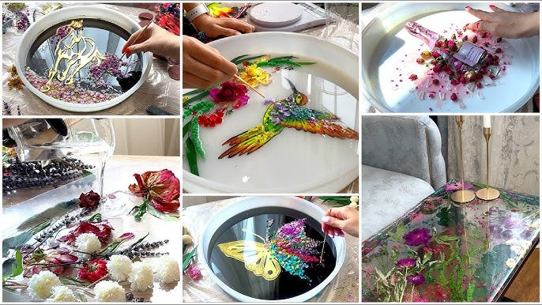
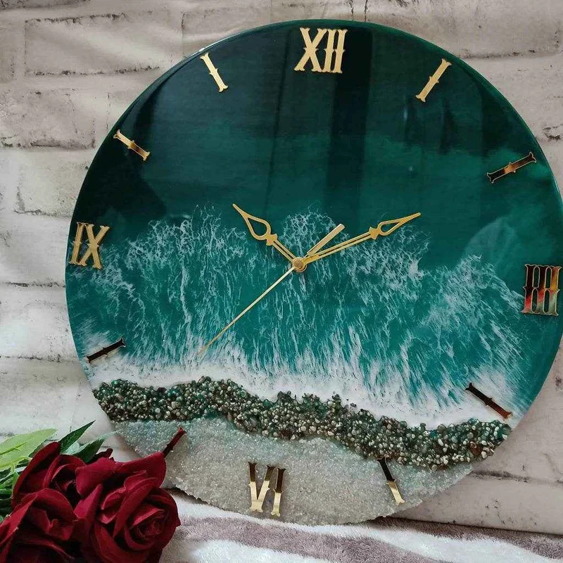
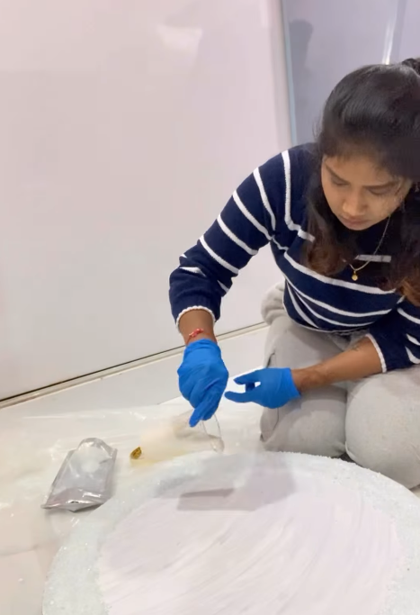

Enquire
Share your occasion, flowers, preferred piece and timeline with us.
Wedding flower & memory preservation · Hyderabad
We preserve wedding flowers, photographs and meaningful details in handcrafted resin—turning one beautiful day into an heirloom you can keep for years.
Made by hand in Hyderabad · Custom-designed for every story

More than a keepsake
Your bouquet carries the flowers you held on one of the most meaningful days of your life. Instead of letting them disappear, we carefully transform them into art that becomes part of your home and your story.

Signature preservation
Every bouquet is different. We work around its colours, textures and sentimental details to create a piece that feels personal rather than mass-produced.
From bouquet to heirloom
Because what you send us is irreplaceable, the process begins with a conversation—not a checkout button.
Share your occasion, flowers, preferred piece and timeline with us.
We discuss the design, preservation possibilities, pricing and how to send your flowers.
Your flowers are carefully prepared and arranged before the resin work begins.
Your finished heirloom is packed with care and prepared for its journey home.
The artist behind the studio
I’m Pravalika, a resin artist based in Hyderabad. I created Resin Studio to give meaningful flowers, photographs and memories a life beyond the moment they came from.
Each piece is made by hand, with attention to the small details that make your story yours.
Follow the studio on Instagram →
Before you send your flowers
Fresh flowers are delicate and every preservation is unique. We’ll guide you on timing, shipping and what is realistically possible before you commit.
Ideally, contact us before the wedding so we can discuss timing and flower handling. If your event has already happened, enquire as soon as possible and tell us the current condition of the flowers.
Natural flowers can change in colour, texture and shape as they dry and are preserved. These variations are part of working with real botanicals, and we’ll discuss expectations with you before starting.
Yes. Depending on the design, photographs, names and other meaningful details can be incorporated. Share your idea in the enquiry and we’ll advise what works best.
Timelines vary by flower condition, design and current studio workload. We confirm an estimated turnaround during your consultation rather than promising a one-size-fits-all date.
A memory worth keeping
Tell us what you’d like to preserve. We’ll guide you through the next steps personally.
Start an enquiry